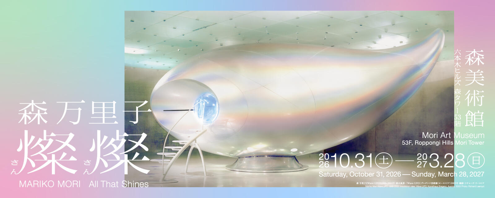

森万里子：燦燦
2026.10.31（土）～ 2027.3.28（日）
10:00〜22:00 ※会期中の火曜日は17:00まで
※最終入館は閉館時間の30分前まで。祝日・特別開館の詳細は公式サイトをご確認ください。
開催予定の展覧会
展覧会スケジュールはこちら →MAIN FEATURES
おすすめコンテンツ
NEWS
ニュース
本地观察筛选：
4件を表示
もっと見る →作品改变，机构识别保持一致。
海报可以采用不同艺术家的图像和色彩；固定红色馆标、红色展期带、统一导航和图文对齐关系，把它们归入同一个美术馆。这里没有复刻购票系统，购票与展览链接均前往真实官网。
查看本地还原范围
保留首页展览主视觉、展期信息、展览列表、新闻图文；简化机构多站联动导航和后续活动。新闻筛选是学习用补充。展期与休馆是 2026-10-07 快照，请以官网为准。